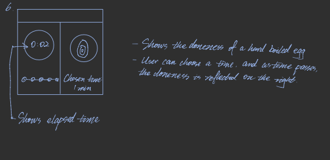
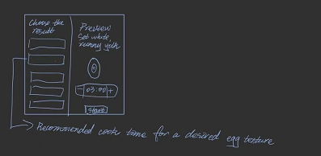

Final Clock 2
Sketch iteration documentation (paper/hand-drawn photos)


Self-reflection / future work:
- Add more types of ingredients the user can choose from, for example, steak, toast, bacon, asparagus, and different kinds of vegetables, and create a database for how long each item should be cooked. I want to add more ingredients so that this app could be used for more than one single ingredient.
- Add more cooking methods, such as stir-fry, baking, grilling, and broiling. I want to do this to imitate the different cooking needs and instructions the user wants.